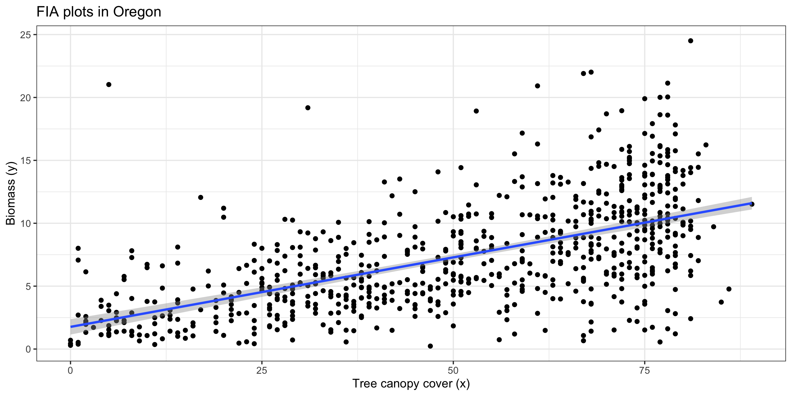
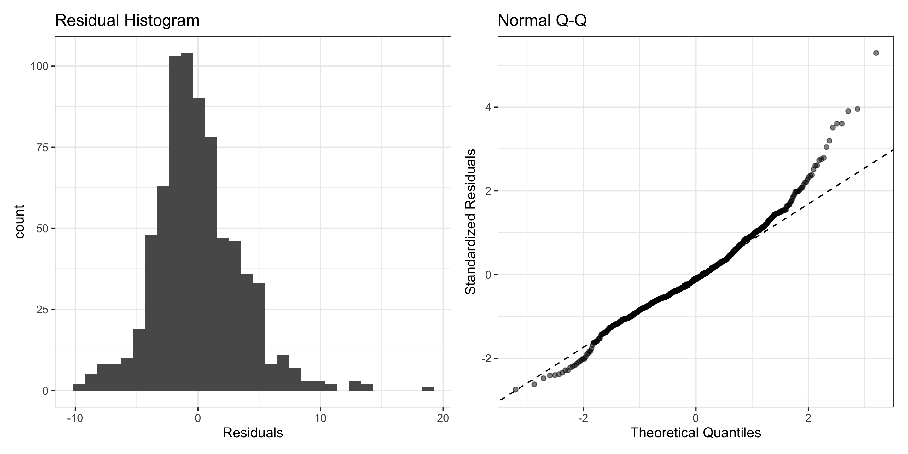
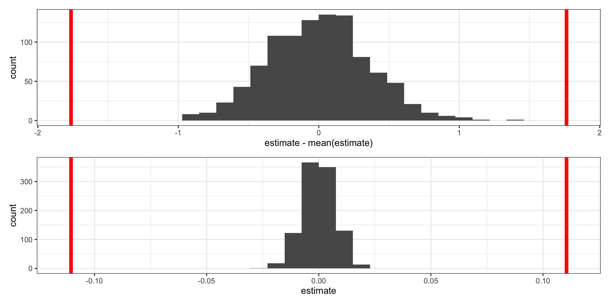

# A tibble: 6 × 11
CN county canopy_cover elev ppt tmean tmin01 tri def tnt biomass
<chr> <chr> <int> <int> <int> <int> <int> <dbl> <int> <int> <dbl>
1 402196… 41001 24 1399 526 630 -847 13.1 585 1 6.11
2 345934… 41001 22 1329 430 745 -652 28.1 640 1 0.468
3 558628… 41001 7 1496 482 756 -648 15 654 2 1.42
4 484818… 41001 49 1836 856 451 -848 17.8 397 1 6.92
5 445418… 41001 46 1569 658 526 -1023 13.6 557 1 6.57
6 558628… 41001 48 1381 546 668 -666 16 518 1 2.59 
Regression Inference II
Grayson White
Math 141
Week 12 | Fall 2025
Goals for Today
- Brief review of theory-based inference for regression
- Learn simulation-based inference for regression
Example for Today: Forest Service data in Oregon
Today, we’ll use data from the US Forest Service, Forest Inventory & Analysis Program.

- The FIA program collects forest plot data on forest attributes across the United States.
- They also rely on remotely sensed data to model relationships between forest variables and remotely sensed variables.
- Each row in our dataset represents a plot. We include a forest variable (biomass) and remotely sensed predictors.
Example for Today: Forest Service data in Oregon
Oregon biomass data: EDA
Recall: Linear Models in R
Fit a linear model to our data using lm()
Plotting a Regression Line
Let’s add the regression line to our plot from before:

Recall: Linear Regression Assumptions
We can always find the line of best fit to explore data, but…
To make accurate predictions or inferences, certain conditions should be met.
To responsibly use linear regression tools for prediction or inference, we require:
Linearity: The relationship between explanatory and response variables must be approximately linear
- Check using scatterplot of data, or residual plot
Independence: The observations should be independent of one another.
- Can check by considering data context, and
- by looking at residual scatterplots too
Normality: The distribution of residuals should be approximately bell-shaped, unimodal, symmetric, and centered at 0 at every “slice” of the explanatory variable
- Simple check: look at histogram of residuals
- Better to use a “Q-Q plot”
Equal Variability: Variance of residuals should be roughly constant across data set. Also called “homoscedasticity”. Models that violate this assumption are sometimes called “heteroscedastic”
- Check using residual plot.
1) Linearity
Linearity: The relationship between explanatory and response variables must be approximately linear.
I think this assumption has been met.
2) Independent Observations
Independence: The observations should be “independent” of one another, after accounting for the variables in the model.
Each FIA plot location is selected randomly, and we have essentially a simple random sample of plots. Because of this…
I think this assumption has been met.
3) Normality (of Residuals)
Normality of Residuals: The residuals should follow a normal distribution.

- Residuals aren’t quite Normal (right-skew, high outliers)
- Don’t discard all conclusions, but be skeptical in them.
I don’t think this assumption has been met.
4) Equal Variability (of Residuals)
Equal Variability: Variance of residuals should be roughly constant across data set.

- There seems to be non-constant variability
- As canopy cover increases, the variance of the residuals increases.
I think this assumption is not met.
Conducting CLT-based inference
# A tibble: 2 × 7
term estimate std_error statistic p_value lower_ci upper_ci
<chr> <dbl> <dbl> <dbl> <dbl> <dbl> <dbl>
1 intercept 1.76 0.312 5.66 0 1.15 2.38
2 canopy_cover 0.11 0.006 19.6 0 0.099 0.122Hypothesis testing:
\(H_o: \beta_o = 0\), \(H_A: \beta_o \neq 0\), and
\(H_o: \beta_1 = 0\), \(H_A: \beta_1 \neq 0\).
Estimation:
We are 95% confident that the true parameter for the intercept, \(\beta_o\), is between 1.152 and 2.38.
We are 95% confident that the true parameter for the slope, \(\beta_1\), is between 0.099 and 0.12.
- Bonus: for different confidence levels, you can set
conf.levelinget_regression_table()!
But these results depend on all LINE conditions being met!
…and they weren’t
Simulation-based inference for regression
Conducting simulation-based inference for regression
We can use bootstrap methods (and permutation) to help us do simulation-based inference for regression.
This approach is very flexible:
- Only requires Linearity and Independence.
- Residuals do not need to be normally distributed or have equal variability!
- Needs some extra code (we get to use
infer!)
Simulation-Based Inference for Regression
To conduct valid inference on regression parameters using simulation-based methods, we need:
- Linearity
- Independence
- A “bigger” sample size
- Same types of inference, just no “theory-based sampling distribution”
Bootstrapping in Regression
To approximate variability in our regression coefficients, \(\hat\beta_0\) and \(\hat\beta_1\) for this simple linear regression example, we bootstrap our sample!
- i.e., we sample, with replacement, rows from our original data.
- For each bootstrap sample, we calculate a new linear model
Red line: Original regression line
Blue line: Bootstrap regression line
Bootstrapping in Regression
To approximate variability in our regression coefficients, \(\hat\beta_0\) and \(\hat\beta_1\) for this simple linear regression example, we bootstrap our sample!
- i.e., we sample, with replacement, rows from our original data.
- For each bootstrap sample, we calculate a new linear model
Red line: Original regression line
Blue line: Bootstrap regression line
Bootstrapping in Regression
To approximate variability in our regression coefficients, \(\hat\beta_0\) and \(\hat\beta_1\) for this simple linear regression example, we bootstrap our sample!
- i.e., we sample, with replacement, rows from our original data.
- For each bootstrap sample, we calculate a new linear model
Red line: Original regression line
Blue line: Bootstrap regression line
Full infer workflow: bootstrapping sampling distributions for coefficients
boot_coefs <- oregon %>% # data
specify(biomass ~ canopy_cover) %>% # linear regression model
generate(
reps = 1000, # number of bootstraps
type = "bootstrap"
) %>%
fit() # new function! fits the regrssion models on each bootstrap sample
head(boot_coefs)# A tibble: 6 × 3
# Groups: replicate [3]
replicate term estimate
<int> <chr> <dbl>
1 1 intercept 1.83
2 1 canopy_cover 0.109
3 2 intercept 1.48
4 2 canopy_cover 0.115
5 3 intercept 1.69
6 3 canopy_cover 0.117[1] 2000Confidence intervals
We use the bootstrap distributions to produce confidence intervals.

Confidence intervals
For the intercept:

Confidence intervals
For slopes:
Comparing confidence intervals
# A tibble: 1 × 2
lower upper
<dbl> <dbl>
1 1.22 2.31# A tibble: 1 × 2
lower upper
<dbl> <dbl>
1 0.0990 0.121# A tibble: 2 × 7
term estimate std_error statistic p_value lower_ci upper_ci
<chr> <dbl> <dbl> <dbl> <dbl> <dbl> <dbl>
1 intercept 1.76 0.312 5.66 0 1.15 2.38
2 canopy_cover 0.11 0.006 19.6 0 0.099 0.122Hypothesis Tests
Let’s conduct our standard regrssion hypothesis tests: \[H_o: \beta_o=0 \qquad H_a: \beta_0 \neq 0\] and
\[H_o: \beta_1=0 \qquad H_a: \beta_1 \neq 0\]
Hypothesis Tests
Generating the null distribution: use permutation
Hypothesis Tests
Visualizing the null distribution and observed statistics
What’s wrong here?
Hypothesis Tests
Visualizing the null distribution and observed statistics
What’s wrong here?
Hypothesis Tests for the intercept
Visualizing the null distribution for the intercept “by hand”:
Hypothesis Tests for the intercept
Visualizing the null distribution for the intercept “by hand”:
Hypothesis Tests for the intercept
Visualizing the null distribution and observed statistics, for the intercept, “by hand”:
Hypothesis Tests
Visualizing the null distribution and observed statistics, for the intercept:
p1 <- null %>%
filter(term == "intercept") %>%
ggplot(aes(x = estimate - mean(estimate))) +
geom_histogram() +
geom_vline(xintercept = obs_stats$estimate[1], color = "red", size = 2) +
geom_vline(xintercept = -obs_stats$estimate[1], color = "red", size = 2)
p2 <- null %>%
filter(term == "canopy_cover") %>%
ggplot(aes(x = estimate)) +
geom_histogram() +
geom_vline(xintercept = obs_stats$estimate[2], color = "red", size = 2) +
geom_vline(xintercept = -obs_stats$estimate[2], color = "red", size = 2)
p1 / p2